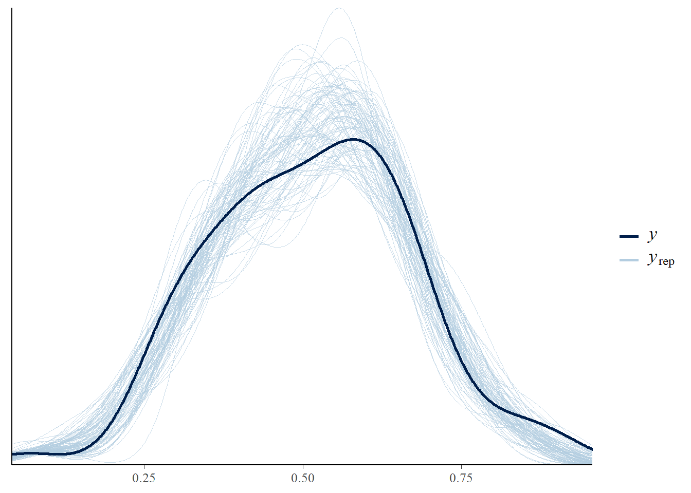
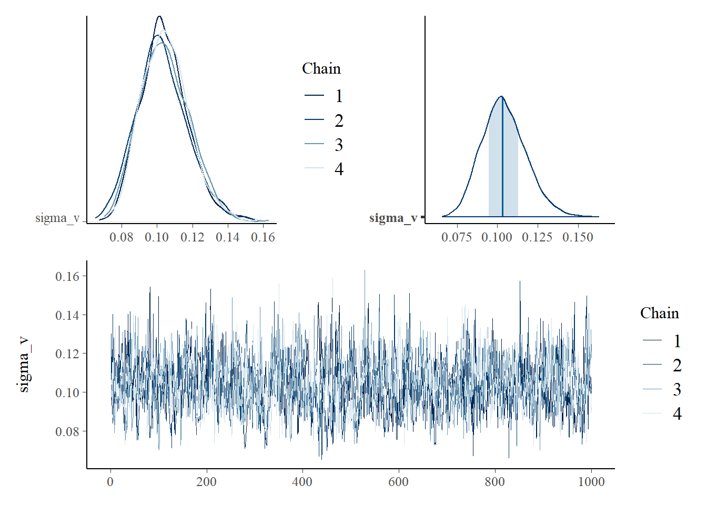
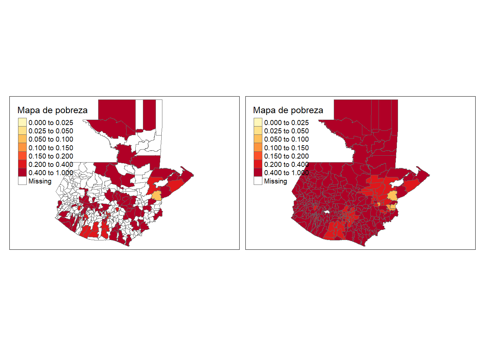
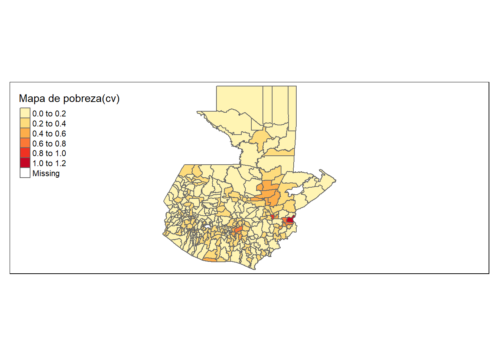

library(tidyverse)
library(magrittr)
base_FH <- readRDS("Data/base_FH_2014.rds") %>%
transmute(dam2, ## id dominios
pobreza,
T_pobreza = asin(sqrt(pobreza)), ## creando zd
n_effec = n_eff_FGV, ## n efectivo
varhat = 1/(4*n_effec) ## varianza para zd
)Fay Herriot en R y STAN transformación arcoseno
CEPAL - Unidad de Estadísticas Sociales
En su concepción más básica, el modelo de Fay-Herriot es una combinación lineal de covariables. Sin embargo, el resultado de esta combinación pueden tomar valores que se salen del rango aceptable en el que puede estar una proporción; es decir, en general el estimador de Fay-Herriot \(\theta \in R\), mientras que el estimador directo \(\theta \in (0,1)\). La transformación arcoseno esta dada por:
\[ \hat{z}_d = arcsin\left( \sqrt{ \hat{\theta}_d} \right) \] donde
\[ Var\left( \hat{z}_d \right) = \frac{\widehat{DEFF}_d}{4\times n_d} = \frac{1}{4\times n_{d,efectivo} } \]
El modelo de Fay-Herriot estaría definido de la siguiente forma:
\[ \begin{eqnarray*} Z \mid \mu,\sigma_e & \sim & N(\mu, \sigma_e)\\ \mu & = & \boldsymbol{X\beta} + V \\ \theta & = & \left(sin(\mu)\right)^2 \end{eqnarray*} \] donde \(V \sim N(0 , \sigma_v)\).
Suponga de las distribuciones previas para \(\boldsymbol{\beta}\) y \(\sigma_{v}^{2}\) son dadas por \[ \begin{eqnarray*} \boldsymbol{\beta} \sim N\left(\mu_{0},\tau_{0}\right)\\ \sigma_{v}^{2} \sim IG\left(\alpha_{1},\alpha_{2}\right) \end{eqnarray*} \]
Procesamiento en R
Lectura de la base de datos que resultó en el paso anterior y selección de las columnas de interés
Lectura de las covariables, las cuales son obtenidas previamente. Dado la diferencia entre las escalas de las variables es necesario hacer un ajuste a estas.
statelevel_predictors_df <- readRDS("Data/statelevel_predictors_df_dam2.rds") %>%
mutate_at(.vars = c("luces_nocturnas",
"suelo_cultivos",
"suelo_urbanos",
"modifica_humana",
"tiempo_hospital",
"tiempo_hospital_no_motor"),
function(x) scale(x)*2+5)Uniendo las dos bases de datos.
base_FH <- full_join(base_FH,statelevel_predictors_df, by = "dam2" )
tba(base_FH[,1:8] %>% head(10))| dam2 | pobreza | T_pobreza | n_effec | varhat | dam | luces_nocturnas | suelo_cultivos |
|---|---|---|---|---|---|---|---|
| 01007 | 0.2996 | 0.5792 | 10.8453 | 0.0231 | 01 | 6.425316 | 4.354648 |
| 02001 | 0.4211 | 0.7062 | 72.0314 | 0.0035 | 02 | 5.286546 | 5.028009 |
| 02002 | 0.4476 | 0.7329 | 39.3361 | 0.0064 | 02 | 3.781731 | 4.867647 |
| 02003 | 0.5179 | 0.8033 | 80.7161 | 0.0031 | 02 | 4.856416 | 5.126377 |
| 02006 | 0.5351 | 0.8205 | 82.0725 | 0.0030 | 02 | 4.052222 | 4.628283 |
| 02007 | 0.4423 | 0.7276 | 78.8014 | 0.0032 | 02 | 6.641498 | 4.895508 |
| 03001 | 0.2990 | 0.5785 | 75.9950 | 0.0033 | 03 | 6.961710 | 4.249805 |
| 03002 | 0.2658 | 0.5416 | 64.7575 | 0.0039 | 03 | 4.070177 | 4.231679 |
| 03004 | 0.3215 | 0.6028 | 98.4354 | 0.0025 | 03 | 5.196541 | 4.356746 |
| 03006 | 0.3650 | 0.6488 | 58.9018 | 0.0042 | 03 | 5.721913 | 4.300431 |
Seleccionando las covariables para el modelo.
# names_cov <-
# statelevel_predictors_df %>%
# data.frame() %>% select_if(is.numeric) %>% names()
names_cov <- c("luces_nocturnas", "tiene_alcantarillado",
"tiene_electricidad", "tiene_acueducto",
"tiene_gas", "tiene_internet", "piso_tierra",
"material_paredes", "material_techo",
"rezago_escolar", "alfabeta",
"tasa_desocupacion" )Preparando los insumos para STAN
Dividir la base de datos en dominios observados y no observados
Dominios observados.
data_dir <- base_FH %>% filter(!is.na(T_pobreza))Dominios NO observados.
data_syn <-
base_FH %>% anti_join(data_dir %>% select(dam2))
tba(data_syn[,1:8] %>% slice(1:10))| dam2 | pobreza | T_pobreza | n_effec | varhat | dam | luces_nocturnas | suelo_cultivos |
|---|---|---|---|---|---|---|---|
| 16012 | NA | NA | NA | NA | 16 | 3.505455 | 4.478813 |
| 16014 | NA | NA | NA | NA | 16 | 3.512824 | 4.885733 |
| 16013 | NA | NA | NA | NA | 16 | 4.050201 | 6.436918 |
| 16015 | NA | NA | NA | NA | 16 | 3.914447 | 7.543074 |
| 16011 | NA | NA | NA | NA | 16 | 3.674836 | 4.266054 |
| 16007 | NA | NA | NA | NA | 16 | 3.810438 | 6.130320 |
| 16017 | NA | NA | NA | NA | 16 | 3.749051 | 5.920236 |
| 16003 | NA | NA | NA | NA | 16 | 4.497657 | 4.271988 |
| 16010 | NA | NA | NA | NA | 16 | 3.958993 | 4.331455 |
| 16016 | NA | NA | NA | NA | 16 | 3.832718 | 4.668809 |
Matrix de covariables (Efectos fijos)
## Dominios observados
Xdat <- cbind(inter = 1,data_dir[,names_cov])
## Dominios no observados
Xs <- cbind(inter = 1,data_syn[,names_cov])Creando lista de parámetros para STAN
sample_data <- list(
N1 = nrow(Xdat), # Observados.
N2 = nrow(Xs), # NO Observados.
p = ncol(Xdat), # Número de regresores.
X = as.matrix(Xdat), # Covariables Observados.
Xs = as.matrix(Xs), # Covariables NO Observados
y = as.numeric(data_dir$T_pobreza),
sigma_e = sqrt(data_dir$varhat)
)Compilando el modelo en STAN
library(cmdstanr)
# file.edit("Data/modelosStan/15FH_arcsin_normal.stan")
fit_FH_arcoseno <- cmdstan_model("Data/modelosStan/15FH_arcsin_normal.stan")
model_FH_arcoseno <-
fit_FH_arcoseno$sample(
data = sample_data,
chains = 4,
parallel_chains = 4,
iter_warmup = 2000,
iter_sampling = 1000,
seed = 1234,
refresh = 1000
)Running MCMC with 4 parallel chains...
Chain 1 Iteration: 1 / 3000 [ 0%] (Warmup)
Chain 2 Iteration: 1 / 3000 [ 0%] (Warmup)
Chain 3 Iteration: 1 / 3000 [ 0%] (Warmup)
Chain 4 Iteration: 1 / 3000 [ 0%] (Warmup)
Chain 1 Iteration: 1000 / 3000 [ 33%] (Warmup)
Chain 2 Iteration: 1000 / 3000 [ 33%] (Warmup)
Chain 3 Iteration: 1000 / 3000 [ 33%] (Warmup)
Chain 4 Iteration: 1000 / 3000 [ 33%] (Warmup)
Chain 1 Iteration: 2000 / 3000 [ 66%] (Warmup)
Chain 1 Iteration: 2001 / 3000 [ 66%] (Sampling)
Chain 2 Iteration: 2000 / 3000 [ 66%] (Warmup)
Chain 2 Iteration: 2001 / 3000 [ 66%] (Sampling)
Chain 3 Iteration: 2000 / 3000 [ 66%] (Warmup)
Chain 3 Iteration: 2001 / 3000 [ 66%] (Sampling)
Chain 4 Iteration: 2000 / 3000 [ 66%] (Warmup)
Chain 4 Iteration: 2001 / 3000 [ 66%] (Sampling)
Chain 1 Iteration: 3000 / 3000 [100%] (Sampling)
Chain 1 finished in 53.5 seconds.
Chain 3 Iteration: 3000 / 3000 [100%] (Sampling)
Chain 3 finished in 53.9 seconds.
Chain 2 Iteration: 3000 / 3000 [100%] (Sampling)
Chain 2 finished in 58.0 seconds.
Chain 4 Iteration: 3000 / 3000 [100%] (Sampling)
Chain 4 finished in 56.5 seconds.
All 4 chains finished successfully.
Mean chain execution time: 55.5 seconds.
Total execution time: 63.5 seconds.Resultados del modelo para los dominios observados.
library(bayesplot)
library(patchwork)
y_pred_B <- model_FH_arcoseno$draws(variables = "theta", format = "matrix")
rowsrandom <- sample(nrow(y_pred_B), 100)
y_pred2 <- y_pred_B[rowsrandom, ]
ppc_dens_overlay(y = as.numeric(data_dir$pobreza), y_pred2)
Análisis gráfico de la convergencia de las cadenas.
(mcmc_dens_chains(model_FH_arcoseno$draws("sigma_v")) +
mcmc_areas(model_FH_arcoseno$draws("sigma_v")))/
mcmc_trace(model_FH_arcoseno$draws("sigma_v"))
Estimación del FH de la pobreza en los dominios observados.
theta_FH <- model_FH_arcoseno$summary(variables = "theta")
data_dir %<>% mutate(pred_arcoseno = theta_FH$mean,
pred_arcoseno_EE = theta_FH$sd,
Cv_pred = pred_arcoseno_EE/pred_arcoseno)Estimación del FH de la pobreza en los dominios NO observados.
theta_FH_pred <- model_FH_arcoseno$summary(variables = "theta_pred")
data_syn <- data_syn %>%
mutate(pred_arcoseno = theta_FH_pred$mean,
pred_arcoseno_EE = theta_FH_pred$sd,
Cv_pred = pred_arcoseno_EE/pred_arcoseno)Mapa de pobreza
library(sp)
library(sf)
library(tmap)
data_map <- rbind(data_dir, data_syn) %>%
select(dam2, pobreza, pred_arcoseno, pred_arcoseno_EE,Cv_pred )
## Leer Shapefile del país
ShapeSAE <- read_sf("Shape/Guatemala_adm2_uscb_2020.shp") %>%
mutate(temp = gsub(pattern = "\\D", replacement = "",x = GEO_MATCH),
dam = substr(temp, 1,2),
dam2 = paste0(dam,str_pad(str_sub(temp,3,4), width = 3,pad = "0"))
)
mapa <- tm_shape(ShapeSAE %>%
left_join(data_map, by = "dam2"))
brks_lp <- c(0,0.025,0.05, 0.1, 0.15, 0.2,0.4, 1)
tmap_options(check.and.fix = TRUE)
Mapa_lp <-
mapa + tm_polygons(
c("pobreza", "pred_arcoseno"),
breaks = brks_lp,
title = "Mapa de pobreza",
palette = "YlOrRd",
colorNA = "white"
) + tm_layout(asp = 1.5)
Mapa_lp
Coeficiente de variación.
Mapa_cv <-
mapa + tm_polygons(
c("Cv_pred"),
title = "Mapa de pobreza(cv)",
palette = "YlOrRd",
colorNA = "white"
) + tm_layout(asp = 2.5)
Mapa_cv